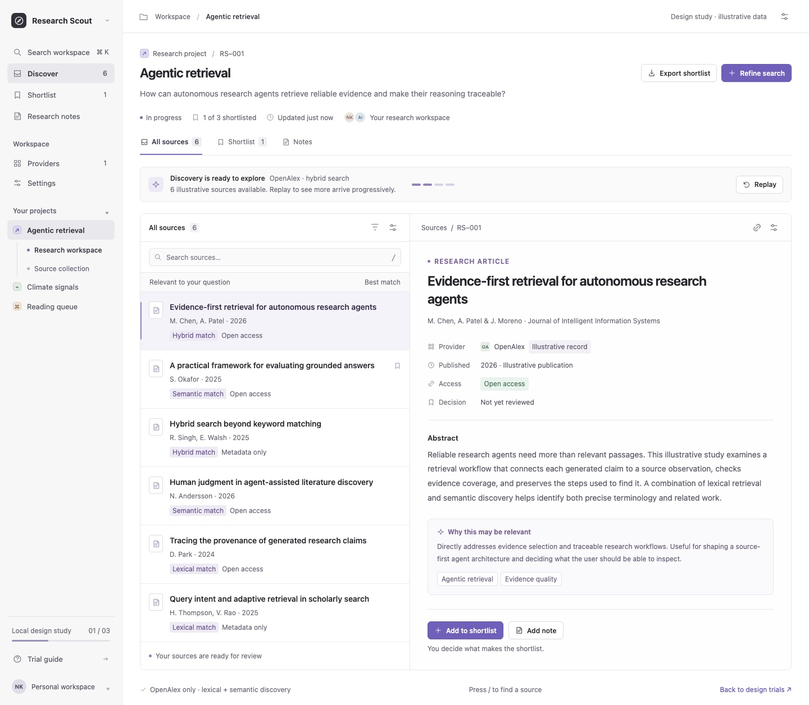
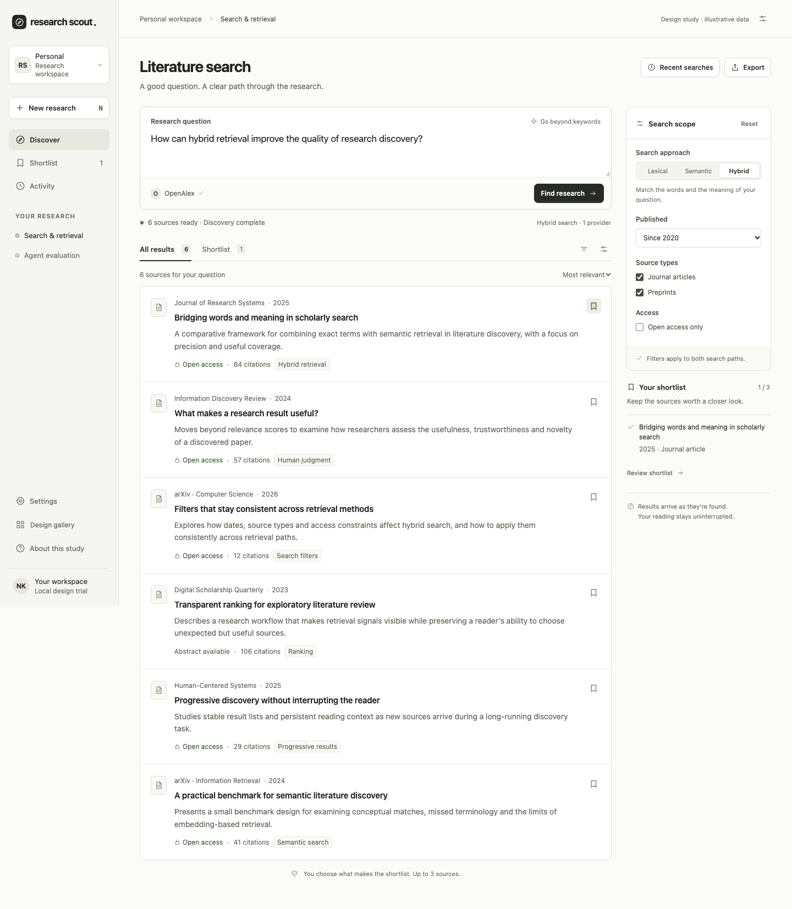
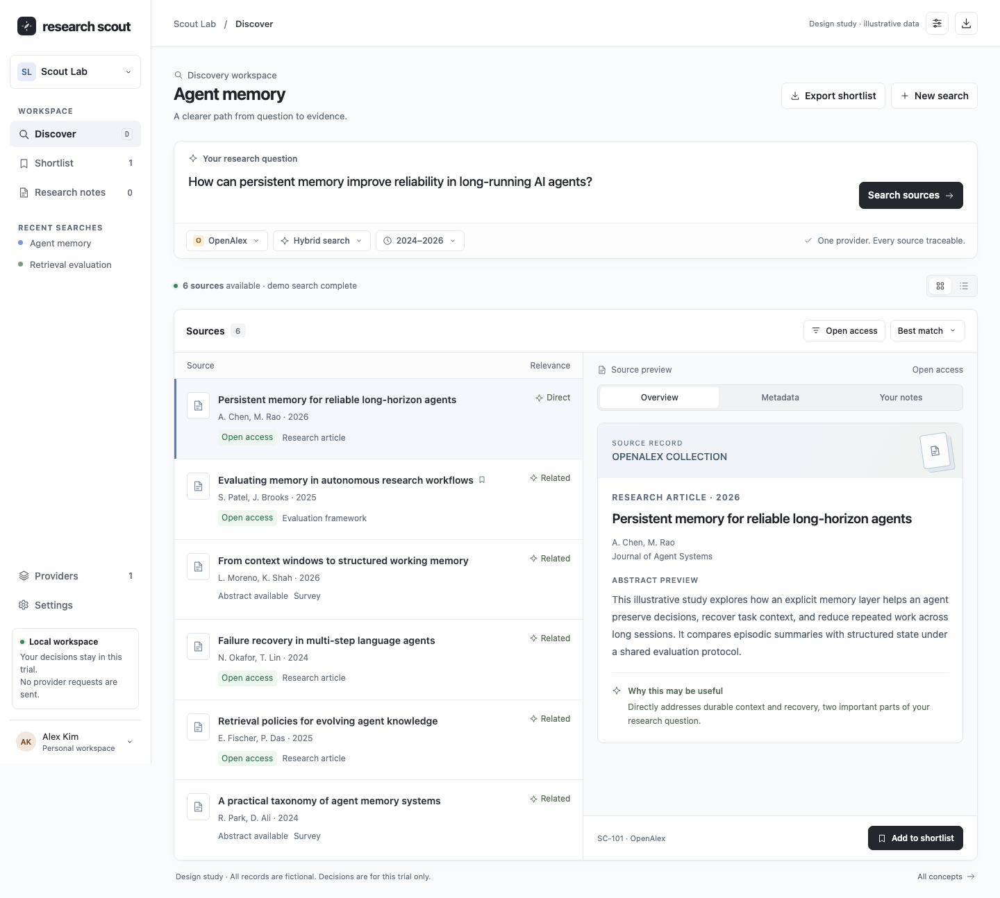

01 / Linear-inspired
The focused workspace
Quiet navigation, a compact source index, and a persistent reader for moving through research with precision.
Workspace explorations / 03 directions
One research workflow, explored through three light interfaces. Open a trial, inspect a source, and try the workspace controls.

Quiet navigation, a compact source index, and a persistent reader for moving through research with precision.

Warm white surfaces, direct questions, and clear search settings. A calmer rhythm with more room to read.

Crisp controls, organized sources, and a structured inspector. A complete portal with detail close at hand.
Compare the layout and the way it feels to work.
Read the question, provider scope, and search progress.
Inspect the details and add a source to your shortlist.
Explore filters, search settings, and the mobile layout.